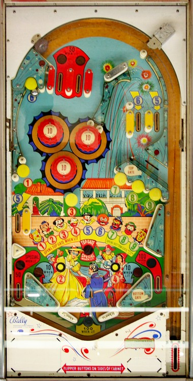

The main goal of Big Day is to collect all of the numbers 1 through 9 from around the game. All mushroom bumpers score 10 points.
#1 is the middle left mushroom bumper.
#2 is the rollover button near the left slingshot.
#3 is the center mushroom bumper.
#4 is the rollover button near the right slingshot.
#5 can be collected at the middle left side lane, or the rightmost of the two top lanes in the upper right.
#6 can be collected at the top left mushroom bumper, or the leftmost of the two top lanes in the upper right.
#7, 8, and 9 can be collected from the three mushroom bumpers on the middle right.
Collecting all of 1-2-3-4 opens the Top Gate, a lane below the top lanes that redirects the ball back to the shooter lane for a replunge. If all of 1-2-3-4-5-6-7-8 are collected, using the Top Gate scores a Special.
Collecting all of 7-8-9 opens the Bottom Gate, which is a free ball gate in the right out lane. This also puts the ball back into the shooter lane for a replunge.
Using either gate resets the entire 1-9 sequence.
Having all of 1-2-3-4-5-6-7-8-9 collected at once lights the left out lane for Special and lights the out hole for a 100-point end of ball bonus. Collected numbers are never preserved from ball to ball.
I have only seen Special score a free game, but it may be possible to have Special score 100 points, as is the case with other Bally games of the time.
The upper left top lanes score 10 points or 50 when lit. Only one of these two lanes is lit at a time, alternating based on 50-point switches anywhere in the game. These lanes are far easier to plunge than the 5-6 upper right top lanes, which are largely sectioned off from the rest of the playfield and need to be shot directly from the left flipper.
Pop bumpers and slingshots score 1 point or 10 when lit. They appear to be lit intermittently using a dynamic difficulty system, similar to many mid-60s Bally games, where switch hits around the game cause the bumpers and slingshots to turn on and off seemingly randomly, with the game being increasingly less likely to light the pops or slings as the game gives out increasingly more Specials to players.
There are no in lanes. Flippers back up directly to the slingshots. Out lanes score 50 points when not lit. The left out lane is lit for Special when 1-9 is completed; the right out lane is lit for 100 points and has an open free ball gate when 7-8-9 is completed. The end of ball bonus is always 100 points and is only scored by draining with all of 1-9 collected. There is no left kickback, center post, or zipper flipper feature. Tilt ends game, but only for the player who tilted.
The below picture of Big Day's playfield was taken from the Internet Pinball Database, where it was originally provided by Jean-Pierre Renault.
